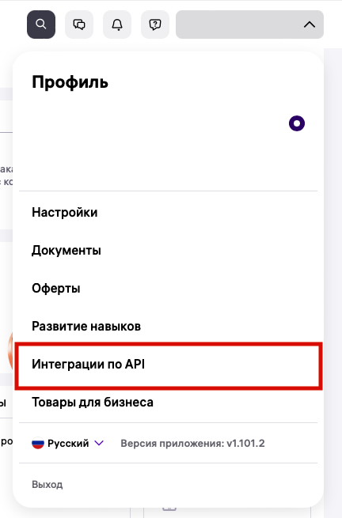
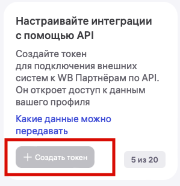
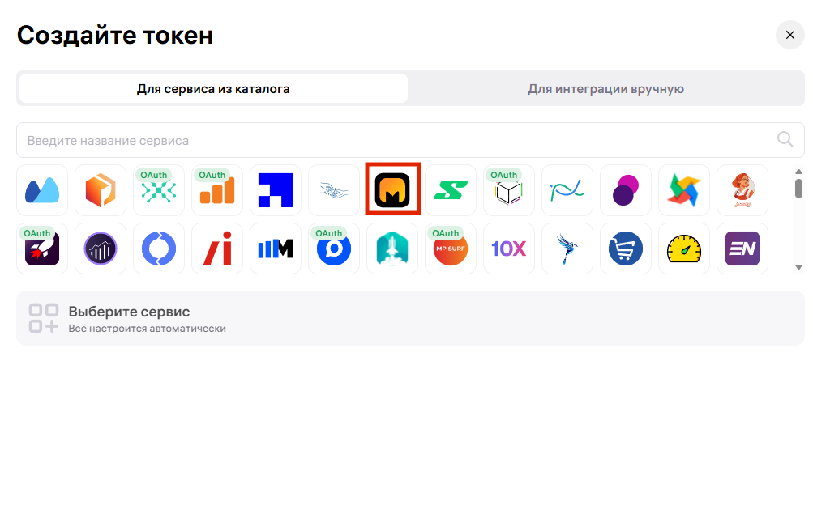
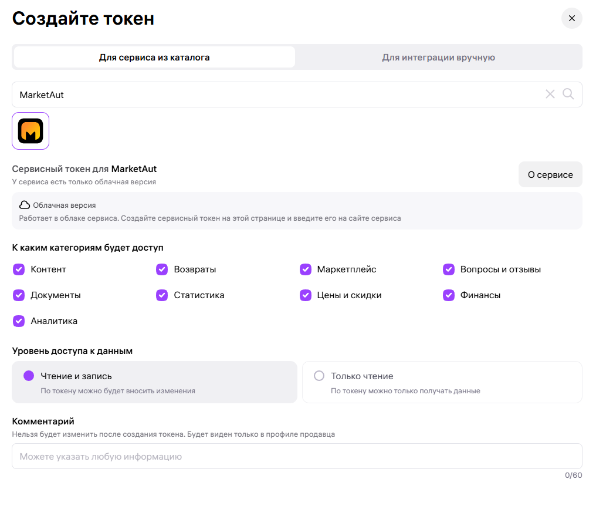
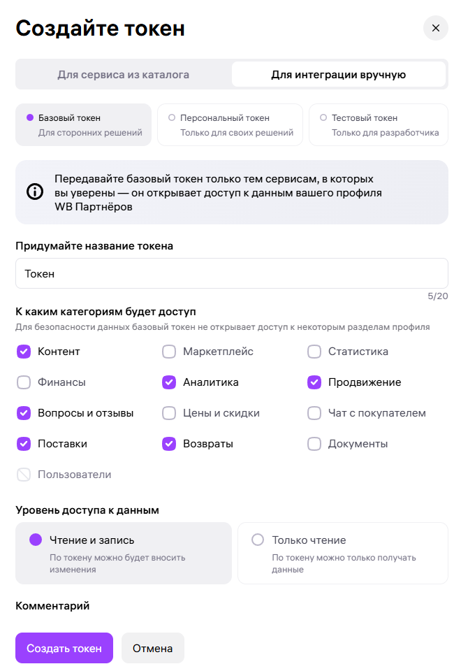

Получение API-токена Wildberries
API-токен позволяет MarketAut получать данные из личного кабинета продавца и выполнять действия от его имени в рамках выбранных разрешений.
⚠️ ВАЖНО: создать API-токен может только владелец личного кабинета Wildberries.
MarketAut входит в список проверенных сервисов Wildberries.
Создать токен можно тремя способами:
- по прямой ссылке — самый быстрый;
- через поиск в каталоге сервисов;
- вручную.
По прямой ссылке
- Откройте MarketAut в каталоге сервисов Wildberries;
- Проверьте категории доступа — они отмечаются автоматически;
- Нажмите Создать токен, затем Скопировать.
Подробнее — в разделе Создание и копирование токена.
Через поиск в каталоге
- Откройте Портал продавца Wildberries и войдите в личный кабинет;
-
В левом меню выберите Настройки → Интеграции по API;

-
Нажмите Создать токен;

-
Откройте вкладку Для сервиса из каталога;
- В поле Введите название сервиса начните вводить
MarketAutи выберите сервис с логотипом MarketAut.
Категории доступа отметятся автоматически. Ненужные можно отключить, но тогда связанные с ними инструменты MarketAut будут недоступны.

Вручную
- Выполните шаги 1–3 из раздела Через поиск в каталоге;
-
Откройте вкладку Для интеграции вручную и выберите Базовый токен;

-
В поле Придумайте название токена укажите любое название, например
MarketAut; - Отметьте категории доступа.
Для основных функций MarketAut отметьте как минимум эти категории:
| Категория | Для чего используется |
|---|---|
| Контент | Работа с карточками товаров, характеристиками и фотографиями |
| Вопросы и отзывы | Просмотр вопросов и отзывов покупателей, а также отправка ответов |
| Чат с покупателем | Получение и отправка сообщений покупателям |
Остальные категории («Возвраты», «Маркетплейс», «Документы», «Статистика», «Цены и скидки», «Финансы», «Аналитика») выбирайте в зависимости от инструментов, которые планируете использовать. Какая категория нужна каждому инструменту — в разделе Инструменты.
Уровень доступа
Для выбранных категорий установите уровень доступа Чтение и запись. Он позволяет MarketAut:
- отвечать на отзывы и вопросы;
- отправлять сообщения покупателям;
- изменять данные карточек товаров;
- загружать фотографии;
- выполнять другие доступные действия через API Wildberries.
С уровнем Только чтение MarketAut сможет получать информацию, но не сможет вносить изменения.
Создание и копирование токена
- Проверьте выбранные параметры и нажмите Создать токен;
- Нажмите Скопировать.
⚠️ ВАЖНО: после закрытия окна посмотреть токен повторно нельзя. Если вы не успели его скопировать, создайте новый.
Не публикуйте API-токен в открытом доступе и передавайте его только сервисам, которым доверяете: токен даёт доступ к данным личного кабинета.
Добавление токена в MarketAut
- Откройте домашнюю страницу MarketAut;
- Вставьте токен в поле Введите WB API-токен и нажмите Сохранить.
Система проверит токен и подключит аккаунт Wildberries. После этого можно пользоваться инструментами MarketAut.